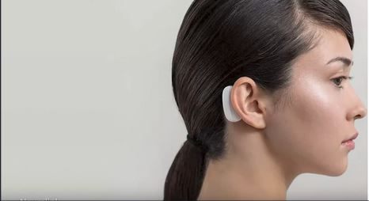
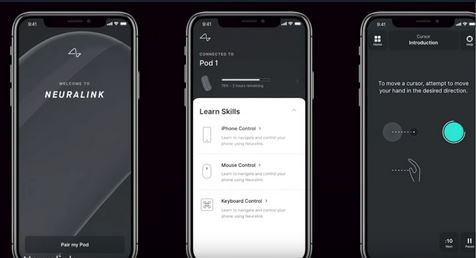

Futuristic Interfaces
Brain-Computer-Interfaces
Experiment mit World of Warcraft aus dem Jahr 2012
Direkte Verbindung zwischen Gehirn und Maschine
Beispiel #1: Mütze mit Elektroden nehmen Signale des Gehirns auf
Daten werden von Algorithmen ausgewertet
Neuralink von Elon Musk
Sensor im Gehirn ist mit Nervenzellen verbunden und per
Bluetooth mit Empfänger am Ohr verbunden
Wird über eine App gesteuert
Ziel:
Erkrankungen des Gehirns besser behandeln
Weiterentwicklung und kontrollierung von KI


Wearable Computing
Biegsamer Touchscreen von Royole
2K Display mit 1mm Biegungsradius